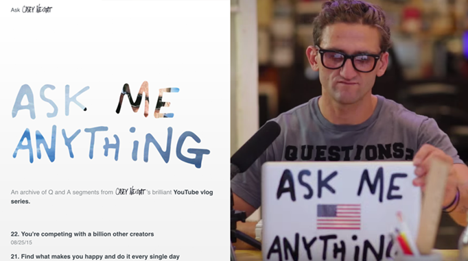
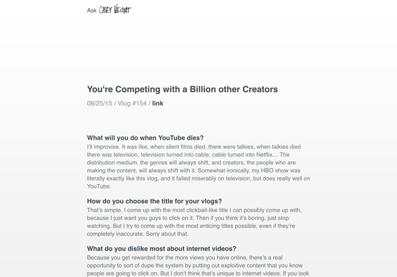

Web Projects
Here's a small collection of projects I've built for the web.
Ask Casey Neistat
Ask Casey Neistat is an archive of Q and A segments from Casey Neistat’s brilliant YouTube vlog series. I watch Casey’s vlogs daily, and thought that creating a searchable archive of his advice would be a nice way of giving back. I designed and developed the site over a weekend in 2015.
The design decisions I made when putting the site together were pretty simple. I had two goals: 1. I wanted to match Casey’s personal style, and 2. I wanted to keep the focus on the content. I made simple typographic choices to address both of these goals. Most of the site is in basic Helvetica/Arial, but I threw in some of Casey’s lettering as accents. I also relied heavily on whitespace to structure the content.
I’d love to extend this website and make a Casey Neistat-bot using Markov chains, since I’ve already transcribed a good amount of his responses to questions.
Get inspired by Casey Neistat